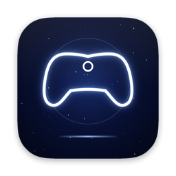
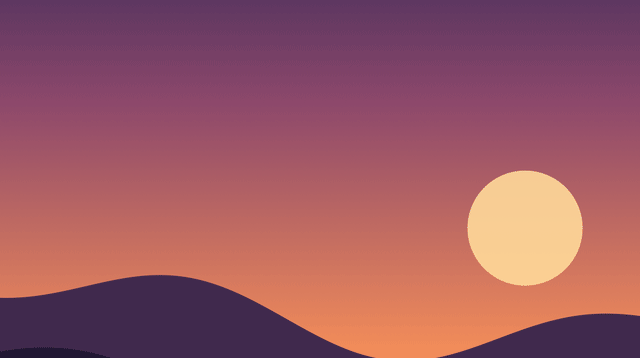
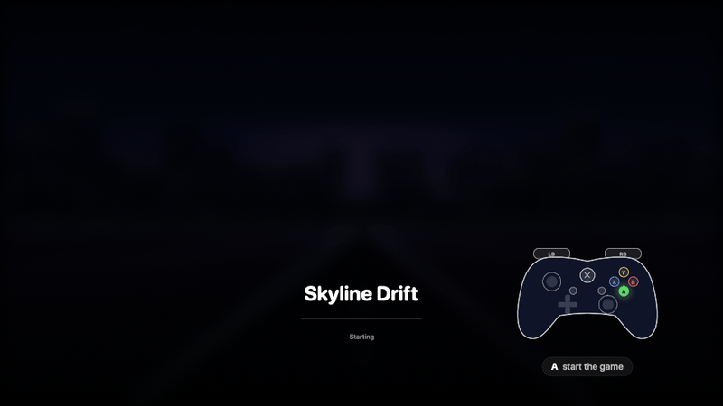
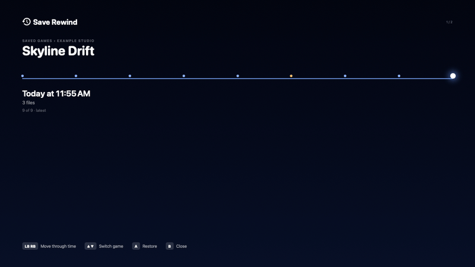
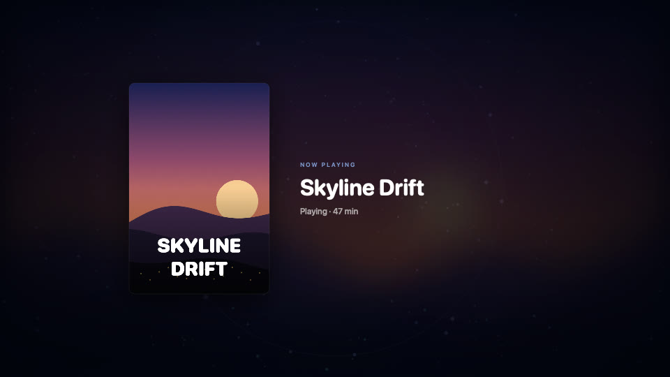

Turn your Mac into a game console
Press the Xbox button: your apps pause, Steam Big Picture opens, and Windows games run through CrossOver. Hold it to get your desktop back.
The 25-second tour: game mode starting, launching a game, holding Xbox to exit, volume, Save Rewind.
What it does
See it




Install
Open Terminal and paste:
curl -fsSL https://raw.githubusercontent.com/CristoXD73/Mac-mini-Frame/claude/steam-console-macos-perf-4lbx1k/install.sh | zshNeeds macOS 15+, Steam for Mac, and CrossOver (a bottle named Steam) for Windows games. Then, in System Settings › Game Controllers, set your controller's Home button to open Console Mode. Full setup →
Controls
| Xbox | Game mode |
| Hold Xbox 6 s | Back to the desktop |
| Xbox + D-pad ↑↓ | Volume |
| Xbox + Y | Performance overlay |
| Xbox + View | Screenshot |
| Xbox + X | Quick Resume |
| Xbox + Menu + View ×2 | Force quit |
| Xbox + LB | Save Rewind |
Performance tip
In CrossOver games, pick DLSS in the game's settings instead of XeSS. CrossOver turns DLSS into Apple's MetalFX. On a Mac mini, XeSS alone kept the GPU at 100% in Clair Obscur: Expedition 33. Switching away from it dropped GPU load to about 69%.